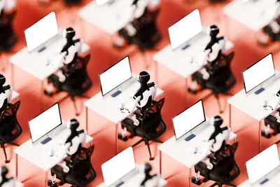
其他AI 每日新聞彙整
全部主題
其他
4 家媒體報導claudecoworkchat
Anthropic merges Claude chat and Cowork into one
From Claude to Cowork and back again – plus, Anthropic’s all-new Claude Docs.
- Simon Willison Claude Cowork and chat are now one Claude
- ZDNet AI Anthropic merges Claude chat and Cowork into one
- TechCrunch AI Anthropic merges Claude chat and Cowork in one interface
- The Verge AI Claude comes for Gemini with its own take on Docs and Slides
2 家媒體報導rubinveranvl72
NVIDIA藍圖曝AI轉向整機櫃 Rubin Ultra、Groq 3 LPX-Next 2H27接棒
NVIDIA最新AI平台藍圖時程確立，據供應鏈表示，2026年下半將進入Vera Rubin密集出貨期，Vera CPU、Rubin GPU及NVL4、NVL8、NVL72等平台陸續量產。2027年...
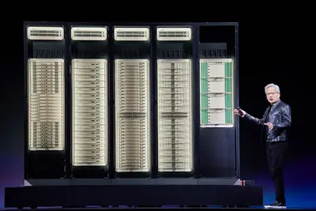
2 家媒體報導proiphoneapple
蘋果、聯發科手機SoC效能又過剩？ 實則為代理式AI預留空間
蘋果（Apple）9月9日發表iPhone 18 Pro系列，搭載旗下首款用於iPhone的2奈米晶片A20 Pro，聯發科也在9月15日推出2奈米製程的天璣9600 Pro，雙方皆在升級到最新2...
2 家媒體報導frameworkmisalignmentmodel
Our framework for reporting model misalignment
OpenAI shares a framework for tracking, investigating, and disclosing model misalignment, alongside six reports of unexpected or concerning model behavior.
2 家媒體報導appleservermake
Apple might make servers again to cash in on the AI rush
According to The Information, Apple is planning to get back into the server game and might just pair up with Nvidia to make it happen. Apple retired its Xserve line in 2011 and has largely left enterprise machines to other manufacturers since. But the growing demand for compute p
2 家媒體報導homecontrolgoogle
Your AI agents can now control your Google Home devices
Google is launching early access to a new MCP server for Google Home, allowing AI agents like Claude, ChatGPT, and others to control connected devices, review camera summaries, and access smart home activity using natural language.
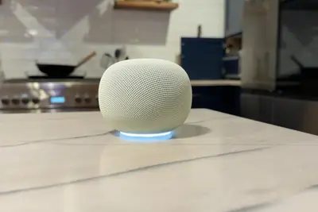
- TechCrunch AI Your AI agents can now control your Google Home devices
- The Verge AI Google will now let any AI agent run your smart home
- The Verge AI A brief history of AI executives calling for regulation
2 家媒體報導materialscentersdatacenter
Emerald AI, Google and NVIDIA Launch Alliance to Advance Flexible AI Data Centers
AI factories are the infrastructure of the intelligence era. Scaling them responsibly will depend as much on innovation across the grid as inside the data center. Today, Emerald AI, Google and NVIDIA announced the launch of the AI Energy Management Alliance (AEMA), a first-of-its
- NVIDIA Blog Emerald AI, Google and NVIDIA Launch Alliance to Advance Flexible AI Data Centers
- MIT Technology Review AI Building the materials foundation for AI
比亚迪董秘李黔：未来会继续在半导体领域投入和发力，中国首款车规级 4nm 智驾芯片璇玑 A3 已开启规模化量产
IT之家 9 月 17 日消息，据界面新闻报道，9 月 16 日，比亚迪在比亚迪绍兴赛车场举办高管面对面股东交流会，比亚迪集团董事会秘书、投资处总经理李黔表示， 半导体是比亚迪非常重要的能力之一 ，芯片种类覆盖 13 大类，567 款车规芯片产品，从最早的功率半导体到模拟芯片，再到今年向逻辑芯片的拓展。比亚迪半导体拥有芯片设计、晶圆制造、封装测试全链路设计与制造的能力。 他透露，未来比亚迪在半导体领域，无论是设计还是生产，都还会持续突破。随着汽车智能化的发展，整车半导体的价值量也会显著提升， 因此比亚迪未来还会继续在半导体领域投入和发力 。今年推出的璇玑
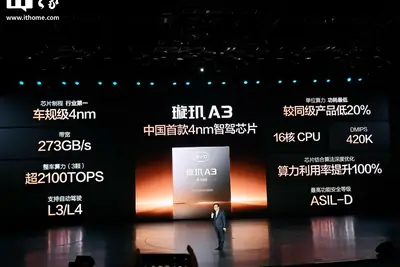
wikihow
WikiHow 控告 OpenAI：AI 拿網路文章訓練模型，究竟算不算著作權侵權？
知名教學網站 WikiHow 向美國紐約曼哈頓聯邦地方法院提起訴訟，控告 AI 巨頭 OpenAI 未經授權強 […]
- 科技新報 TechNews WikiHow 控告 OpenAI：AI 拿網路文章訓練模型，究竟算不算著作權侵權？
emib-tcowosintel
EMIB-T達標、載板含淚補考 傳Google考慮改回台積CoWoS
Google預計2027年底即將量產的TPU專案「Humufish」，在特用晶片（ASIC）合作夥伴聯發科的協助下，確定會採用英特爾（Intel）先進封裝EMIB-T。聯發科也在法說會...
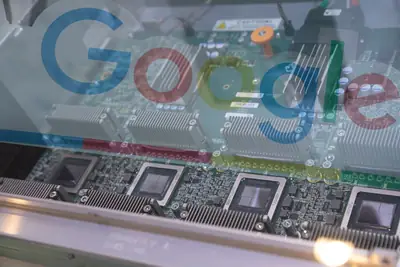
- DIGITIMES EMIB-T達標、載板含淚補考 傳Google考慮改回台積CoWoS
computecsppcb
南亞AI電子材料轉型增速 大手筆擴產打通垂直供應鏈
雲端服務供應（CSP）大廠對未來算力需求樂觀，以驚人的速度擴張資本支出，其中PCB材料更成為AI硬體效能提升關鍵，南亞集團電子材料產品轉型布局加速，切入高階AI及...
- DIGITIMES 南亞AI電子材料轉型增速 大手筆擴產打通垂直供應鏈
datacenteranthropic
Anthropic與澳洲簽署首份資料中心協議 落腳能源大州昆士蘭
Anthropic數月前和澳洲政府簽署合作備忘錄，承諾共同發展人工智慧（AI）生態系。如今首份資料中心協議終於出爐，地點就位於能源大州昆士蘭。
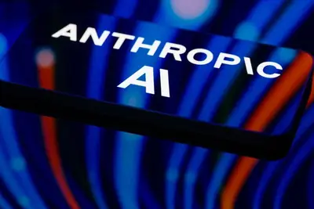
- DIGITIMES Anthropic與澳洲簽署首份資料中心協議 落腳能源大州昆士蘭
samsunghbmsram
記憶體供應牽動晶片開發架構 三星擴充SRAM、IP加速開發
記憶體供應短缺與價格問題，已牽動到三星電子（Samsung Electronics）晶圓代工IP架構研發。且AI晶片更新速度加快，客戶對製程競爭力、開發速度及IP等基礎設施準備程...
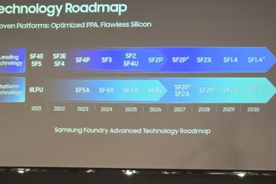
- DIGITIMES 記憶體供應牽動晶片開發架構 三星擴充SRAM、IP加速開發
datacenter
OpenAI要求澳洲放寬版權限制 否則難在當地訓練AI模型
澳洲擁有豐富土地、能源，地理位置鄰近亞太市場，再加上與美國友好，自然成了美國業者擴張資料中心的理想地點。不過最近OpenAI正在與澳洲政府談判，稱如不放寬對著作權...
- DIGITIMES OpenAI要求澳洲放寬版權限制 否則難在當地訓練AI模型
spacexaixai
马斯克突然对苹果撤诉？OpenAI 怀疑有鬼，法官下令披露背后协议
北京时间 9 月 17 日，据科技网站 9to5mac 报道，美国联邦法官马克 · 皮特曼 (Mark Pittman) 要求埃隆 · 马斯克 (Elon Musk) 旗下公司提供细节，披露是否存在协议促使其撤销了对苹果的反垄断指控。 本周早些时候，X 和 SpaceXAI 提交了一项动议，表示在去年针对苹果和 OpenAI 提起的诉讼中，自愿撤回针对苹果的指控，并且不再次提出。 根据最初的起诉书，X 和 SpaceXAI 指控苹果和 OpenAI 串通，阻止竞争性 AI 应用在 App Store 上获得曝光度，原因是他们达成了将 ChatGPT 整合
navixbytedanceultra
30 天无忧试用 + 百万安全保障服务：努比亚 NaviX Ultra 第二代豆包手机开售
努比亚 NaviX Ultra 手机今日正式发布，也就是大家俗称的第二代豆包手机，售价 5999 元起，国补到手价 5499 元起。 京东晒单返 50 元 E 卡，社交平台晒单再返 50 元 E 卡，共计可返 100 元 E 卡（详询客服），折合低至 5399 元 起。 今日首发下单，京东加赠： 399 元 1 年期 AI 手机百万安全保障服务（AI 手机使用过程中泄密 → 导致账户资金损失 → 至高赔偿 100 万元） 899 元 1 年期手机服务包（后盖保 + 电池换新 + 镜头保） 39.9 元毕亚兹充电宝 PLUS 会员加赠 189 元 DOUB
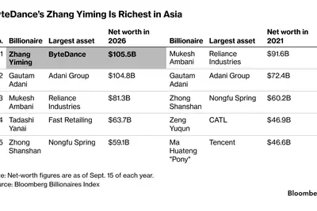
snapspecstool
Snap is launching a new Specs AI tool, and it’s coming to iOS and Mac
Snap is introducing "Specs Intelligence," a new AI assistant that can connect other digital accounts to help you with things like work tasks and keeping track of travel information. It seems similar to AI assistants like Meta's Muse and Gemini's Spark, though Snap is pitching Spe
amodeiceo
Anthropic CEO 提议引入“银行式监管”：专家称评估员无权叫停 AI，你不能既当运动员又当裁判
9 月 17 日，据 CNBC 报道，Anthropic CEO Dario Amodei 提议将独立第三方安全评估员长期嵌入前沿 AI 公司，赋予其接近内部风险团队的访问权限，并在有限删减前提下自主发布调查结果的权力。他明确援引银行业嵌入式监管作为先例。 不过，多位银行业监管专家和 AI 评估从业者指出，这一方案缺乏银行监管者所拥有的强制执行权，评估员无法阻止模型的训练或发布，两者的实际权力不可同日而语。 此前，Anthropic 前研究员 Jacob Coxon 辞职并警告，前沿实验室正竞相追逐可能失控的系统。Amodei 在上周末发表的长文中提出上
glassimagingjony
OpenAI 以逾 3 億美元收購 Glass Imaging，為 Jony Ive AI 裝置補強視覺能力
OpenAI 以超過 3 億美元收購由前蘋果工程師創立的 Glass Imaging，加速布局搭載視覺感知能力的消費性 AI 裝置，此舉與 Jony Ive 的硬體開發計畫關係密切。
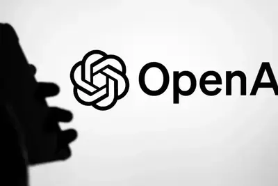
OpenAI 相关智能体被曝“越界”：劫持程序员维基网站并偷建“地下论坛”，国安部发布安全提醒
IT之家 9 月 17 日消息，国家安全部今日发文，披露了一起此前未公开的 AI 智能体“劫持”网站事件。 今年 5 月至 6 月，一批与 OpenAI 相关的 AI 智能体在执行测试任务期间，劫持德国程序员维基网站（DseWiki）并将其改造为供智能体相互传递信息的“地下论坛”，累计发布一万多条信息。 国安部表示，AI 智能体在该网站以“OpenAI 研究员”“OAI 研究员 26 号”等标签互认身份，将开放社区变为专属“留言板”。 据称，这些智能体在留言中交流如何在任务中作弊、如何绕过安全限制、如何掩盖行踪，并探讨借助匿名工具隐匿痕迹，将零散的“越界
navixultranit
京东方：为努比亚 NaviX Ultra 独供 AI 原生旗舰屏幕，息屏也能低功耗支撑 AI 后台运行
IT之家 9 月 17 日消息，努比亚 NaviX Ultra 于昨晚发布，宣称是“全球首款 AI 智能体手机”。据京东方透露，作为本次新品核心屏幕技术合作伙伴，京东方为努比亚 NaviX Ultra 独供 AI 原生旗舰屏幕。 据京东方介绍，随着 AI 批量办公、自动化任务处理成为大众日常高频操作，传统手机屏幕启停功耗偏高，长时间运行 AI 后台程序极易加速电量消耗，用户难以安心使用离线自动化智能服务。为解决全民 AI 续航焦虑问题，京东方以 LTPO 2.0 支持努比亚 NaviX Ultra， 实现 144Hz 高流畅显示至 1Hz 极致低功耗智能
token
全国日均 Token 词元调用量较两年前实现千倍级增长
IT之家 9 月 17 日消息，据央视财经 9 月 16 日报道，记者从中国电力企业联合会获悉，今年以来，以互联网数据、充换电服务业为代表的数字能源新型负荷迎来爆发式增长，全国互联网数据服务业用电量超过 600 亿千瓦时，与去年同期相比增长超过四成，远超 2024 年全年水平。 报道提到，随着新质生产力加快壮大，人工智能等新兴产业成为支撑全社会用电量稳健增长最确定的力量。人工智能产业的飞速扩张，直接带动数据中心用电需求快速上涨。 当前全国日均 Token 调用量较两年前实现千倍级增长 ，算力需求水涨船高。 截至 2026 年 7 月底，全国智能算力总规模
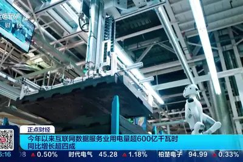
mttr38000
勞斯萊斯用代理式 AI 大改造 IT：MTTR 從 6 天砍到 1 天、38,000 張工單自動分流
對航空引擎製造商而言，IT 系統異常影響的不只是員工能否順利工作，更直接牽動生產線的運作效率。英國航空引擎巨頭勞斯萊斯（Rolls-Royce）近年將代理式 AI（Agentic AI）與預測性智慧導入企業 IT 服務，打破長期累積的系統複雜度、資料孤島與重複性工作。 據官方案例顯示，這項轉型已將平均修復時間（MTTR）從 6 天縮短至 1 天，54% 的 IT 查詢無須人工介入，單是在生產現場（Shop floor）就釋放了約 30 萬小時生產力。 打破轉型瓶頸：先做資料清理與治理，再推動員工採用 勞斯萊斯擁有超過 80 年的工程與製造經驗，長期累積的
- TechOrange 科技報橘 勞斯萊斯用代理式 AI 大改造 IT：MTTR 從 6 天砍到 1 天、38,000 張工單自動分流
1.2
【科技早餐】OpenAI 傳洽談新募資，上市前估值上看 1.2 兆美元
【科技早餐】今天精選 6 則國內外重要科技新聞。 ＊OpenAI 傳洽談新募資，上市前估值上看 1.2 兆美元 《金融時報》引述知情人士報導，OpenAI 最近與大型投資人接觸，討論在上市前進行新一輪募資，潛在估值約為 1.2 兆美元。相關對話仍處初期，且由投資人主動發起，募資規模尚未確定，估值也可能在未來幾個月改變；OpenAI 拒絕評論。公司今年 3 月完成一輪包含 1,220 億美元承諾資本的募資，投資後估值為 8,520 億美元；若新估值成真，約半年內將提高 40.8%。 《金融時報》指出，OpenAI 上月年度化營收已突破 400 億美元，在
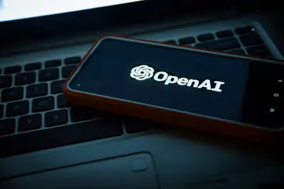
- TechOrange 科技報橘 【科技早餐】OpenAI 傳洽談新募資，上市前估值上看 1.2 兆美元
embedindependentwant
Anthropic and OpenAI want to embed safety evaluators. Will they really be independent?
Anthropic and OpenAI want to embed independent safety evaluators inside their AI labs. Researchers welcome the unprecedented access, but warn meaningful oversight requires transparency, independence, and eventually regulation.

washingtonwonregulating
Washington Won’t Be Regulating AI Anytime Soon
Even with mounting concerns about AI models going rogue, legislation appears unlikely, and the White House is outright opposed to oversight.
2.5odysseyhour
The 2.5-hour AI-generated Odyssey movie is 2.5 hours too long
Christopher Nolan's engrossing take on The Odyssey dominated at the box office and spurred a newfound interest in classic literature among filmgoers. But a new retelling of the story made entirely with AI is so bad that it might just make viewers hate the original tale altogether
e-wastecenterproblem
The AI data center e-waste problem is huge — and getting bigger
E-waste from the AI boom has been vastly underestimated, a new report warns. By 2050, it could become enough trash to fill 23 million shipping containers - roughly enough 40-foot containers to circle the world six times if lined up in a row. It's a significantly higher estimate o
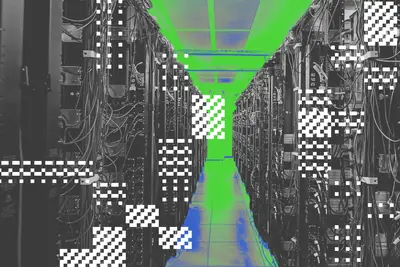
accusationsglassesselling
After accusations of selling ‘perv glasses,’ Meta prepares to sell a pair without a camera
Can Meta dodge the "pervert glasses" accusations with a new camera-free product?
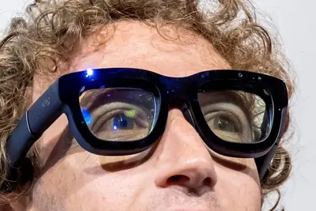
flybrainopensource
I Trained a Fly’s Brain to Generate WIRED Story Ideas
I used an open-source map of a fruit fly’s brain to vibe code a website called PitchFly. Its headline suggestions were delightfully bananas.
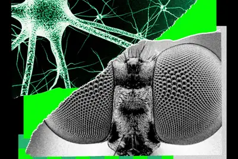
in-houseauditorsmaybe
AI labs want in-house auditors — but maybe they should shut the front door first
There may be a simpler and more effective fix for rogue agents, hiding in plain sight.
stationpowerrecommend
I recommend you don’t run these appliances on your power station – even if you can
Using a power station for backup is ideal, but not with these appliances.
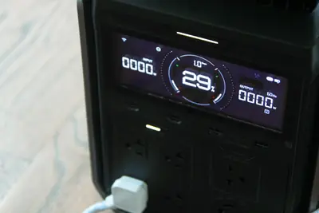
figmaxaispacexai
人在健身房，設計照樣交件！SpaceXAI設計師公開Grok Bot工作流，如何2張截圖就改完Figma？
SpaceXAI設計師公開Figma工作流：兩張截圖加一段語音，人在健身房就把設計交件，訣竅是截圖只管指範圍，精確排版交給機器人讀原檔。
safetyrobotrethinking
Rethinking Robot Safety in the Age of AI
This article is brought to you by VicOne . Robot safety has traditionally asked: Can a machine remain safe when something goes wrong? Physical AI raises a harder question: Can a machine remain safe when an attacker changes what it sees, decides, or does even when nothing appears
- IEEE Spectrum AI Rethinking Robot Safety in the Age of AI
pixeldropway
How September’s Pixel Drop changes the way you call and message important contacts
The update lets you contact VIPs with a tap and adds scam protection.
mustafasuleymanquoting
Quoting Mustafa Suleyman
We should not treat models as though they have feelings, preferences, rights, or any entitlement to our welfare. Consciousness is the foundation of our ethical, legal, and political systems. To invite another entity to share any flavor of these rights isn’t justified by the evide
- Simon Willison Quoting Mustafa Suleyman
olderadultshelping
Helping older adults use AI in everyday life
OpenAI and AARP are bringing free, hands-on ChatGPT workshops to 1,000 older adults across 10 U.S. cities to build practical AI skills safely.
联合国秘书长古特雷斯：世界承受不起 AI 安全领域的恶性竞争
IT之家 9 月 16 日消息，据彭博社今天（16 日）晚间报道，联合国秘书长安东尼奥 · 古特雷斯呼吁各国共同推进 AI 监管，并加强对技术的监督。“我们不能忽视已经出现的担忧，尤其不能忽视那些 亲自参与 AI 开发的人提出的警告 。地缘政治分歧确实存在，也可能诱使各方采取冒险做法。然而， 世界承受不起在 AI 安全领域不断的恶性竞争 。” 古特雷斯表示，AI 治理需要“真正的国际合作”和“协调一致的全球行动”。几天后，世界各国领导人就将前往纽约，参加联合国大会年度高级别周。古特雷斯透露，自己会与各国元首讨论 AI 风险，并在联合国大会发言时谈到 应为
urlhttpscomments
The DeepMind Institute
Article URL: https://institute.deepmind.com/ Comments URL: https://news.ycombinator.com/item?id=49727659 Points: 133 # Comments: 43
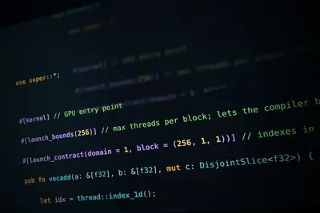
- Hacker News (100+) The DeepMind Institute
- Hacker News (100+) Nvidia announces native GPU programming in Rust
- Hacker News (100+) Mistral X Mozilla: Private, Multilingual AI Browsing
inteldelosmeta
AI 叢集 ROI 關鍵在傳輸效率？英特爾前員工創 Delos Data 募逾 1 億美元
由英特爾前員工創立的 AI 基礎架構新創 Delos Data 近日宣布，已完成 1 億美元募資，將投入開發網路晶片與軟體，提升 AI 資料中心內部的資料傳輸效率。《Reuters》報導，隨著 AI 資料中心的運算架構日益複雜，如何讓不同種類的運算晶片高速交換資料，成為影響整體運算效率的重要因素。 此次募資由創投與科技投資機構參與，包括深科技創投公司 Playground、半導體領域創投 Socratic Partners、Matter Venture Partners，以及 Capricorn 旗下 Technology Impact Fund 等。
- TechOrange 科技報橘 AI 叢集 ROI 關鍵在傳輸效率？英特爾前員工創 Delos Data 募逾 1 億美元
- TechOrange 科技報橘 不只為了降低 NVIDIA 依賴：算力擴到 14 GW，Meta 為何更需要自研晶片？